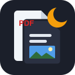
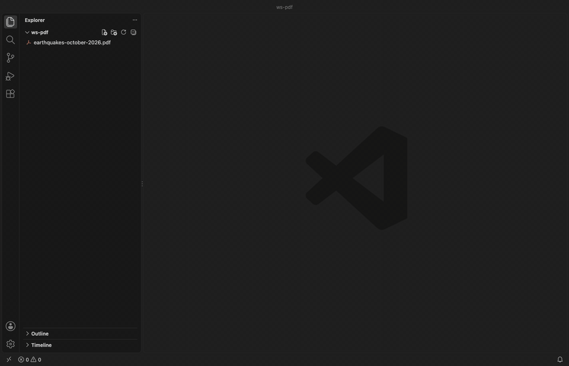
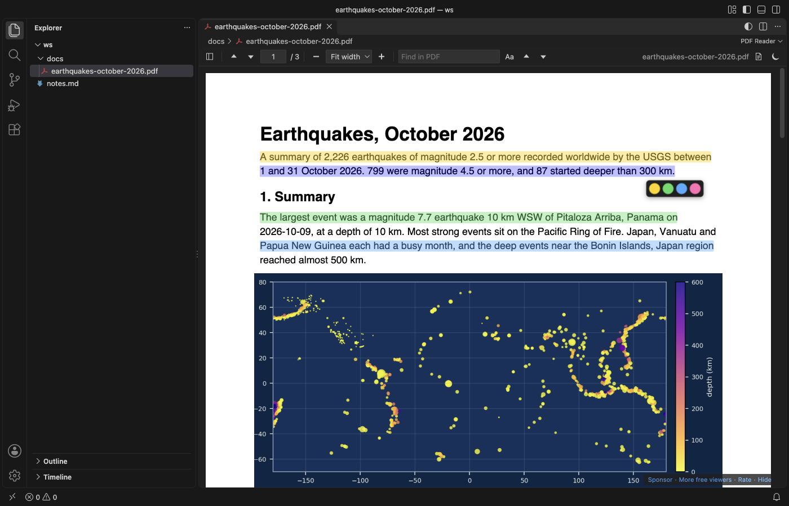
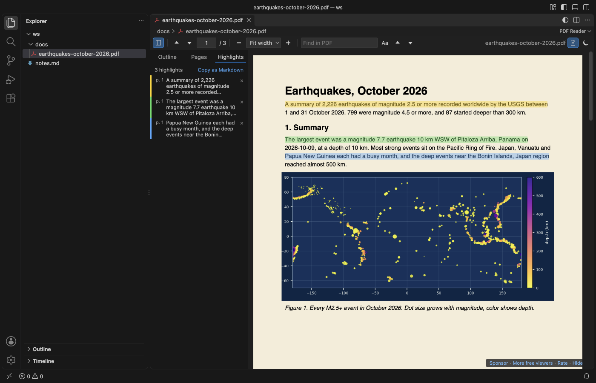
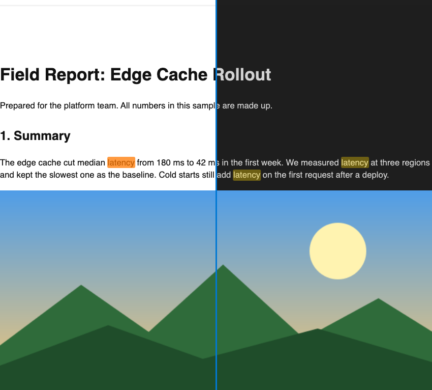
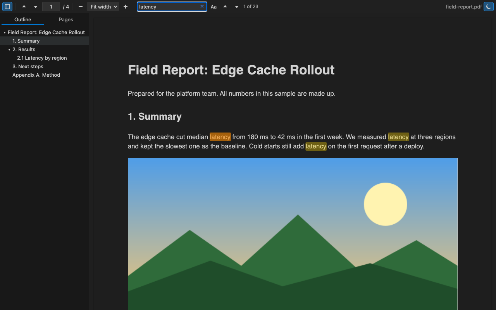
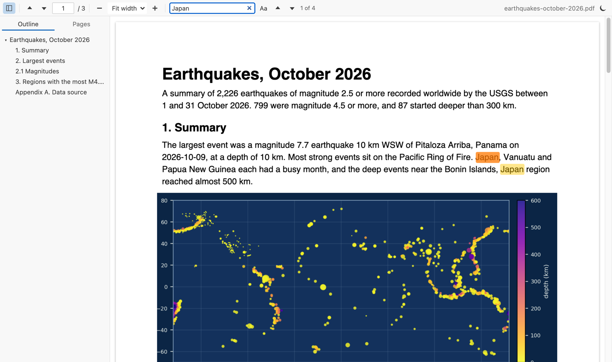
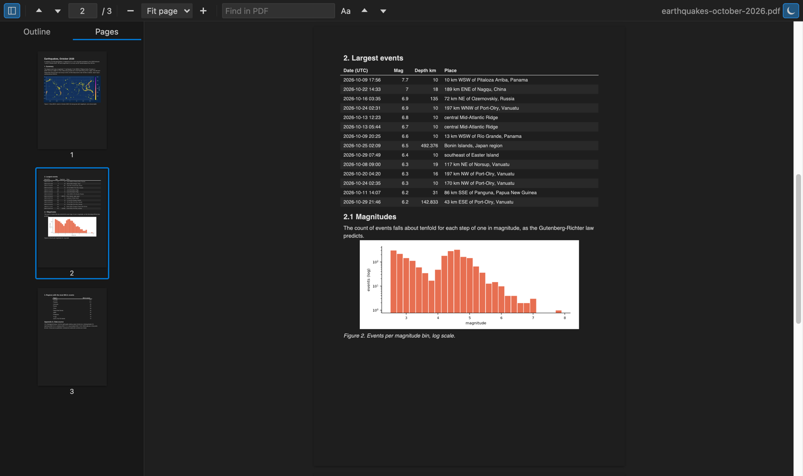
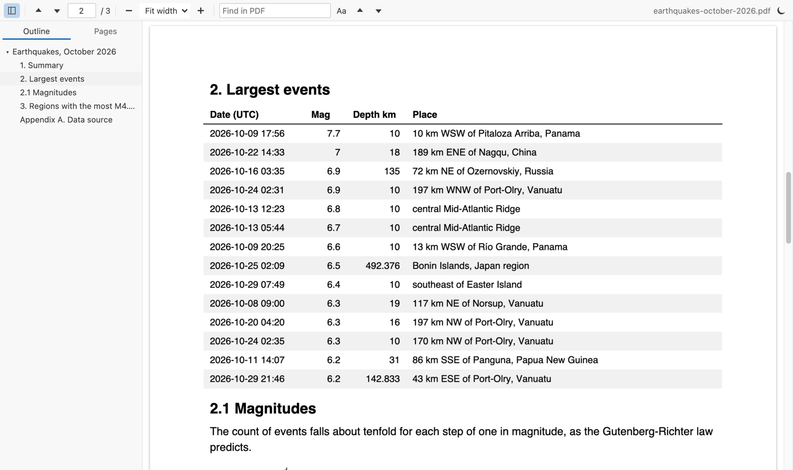

Read PDFs in VS Code with a dark mode that keeps images in color
PDF Viewer & PDF Reader to Read and View PDF (Dark Mode), a VS Code extension by Zovo
A PDF viewer and PDF reader for VS Code. Read specs and papers next to your code on dark or sepia pages that keep photos in their real colors, and highlight the parts you want to find again.
Free, MIT license. Needs VS Code 1.90.0 or newer. Extension ID zovo.pdf-viewer-dark, version 0.3.1.
It reloads when the PDF changes on disk, after a LaTeX, Typst or report build, and keeps your page, zoom and scroll position. It does not take Ctrl+P (Cmd+P on macOS), so Quick Open works while a PDF is open. Its find, go-to-page and zoom keys apply only while the PDF tab is active.

- Highlights: select text and pick one of 4 colors, or press
H. The Highlights tab lists them, a click jumps back, and "Copy as Markdown" gives you a list with a link to each page for your notes. The PDF file is not changed. - Dark and sepia pages: dark pages for night, warm sepia pages for long reading. Text, lines and backgrounds change color. Photos keep theirs.
- Find, outline and pages: Find in PDF highlights every match, and the sidebar has the outline and page thumbnails. Each PDF reopens where you left it. It runs offline, with no telemetry.
Quick start
- Install the extension.
- Click any
.pdffile in the Explorer. PressCtrl+F(Cmd+Fon macOS) to search, and click the moon button to switch dark pages on or off.

Recorded in the same window. The white arrow is drawn in to show where each click lands.
Run "Get Started with PDF Reader" from the Welcome page for a short tour.
Questions people ask
How do I open a PDF in VS Code?
Install PDF Reader and click any .pdf file in the Explorer. It opens in the editor area. If you have another PDF extension, right-click the file and pick "Open With..." to choose this one.
Does VS Code have a PDF dark mode?
VS Code has no PDF viewer of its own. PDF Reader adds one, and its pages follow your theme, so a dark theme gives you dark pages. Click the moon button or run "PDF: Toggle Dark Pages" to switch it for the open file, or set pdfViewer.darkMode to on or off.
Will dark mode ruin photos and charts?
Photos keep their colors. Most dark PDF modes invert the whole page, so a blue sky turns orange. PDF Reader inverts the page and then paints each raster image back in its original pixels. Charts drawn as vector lines get inverted like text, because to the PDF they're lines.
Can I search inside a PDF in VS Code?
Yes. Press Ctrl+F (Cmd+F on macOS). Every match is highlighted, the counter shows where you are, and Enter and Shift+Enter jump between matches. "Aa" turns on match case.
Does it reload when I rebuild a LaTeX PDF?
Yes. When the file changes on disk the viewer reloads it and stays on the same page. Each PDF also reopens at the page and zoom where you left it.
Can I annotate or fill PDF forms?
No. It's a viewer. It doesn't fill forms, add annotations or print, and it never runs JavaScript from the PDF.
Is it free and private?
It's free and MIT licensed. pdf.js is bundled inside the extension, so it works offline, makes no network calls and sends no telemetry.
Highlights you can take to your notes
Select text on a page. A small bar with 4 colors appears under the selection. Click a color, or press H for yellow.

The sidebar's Highlights tab lists every highlight of the file with its page. Click one to jump to it, or click × to remove it. Highlights are saved in VS Code on this computer, for each file, and come back when you open the PDF again. They are not written into the PDF.
"Copy as Markdown" (or "PDF: Copy Highlights as Markdown" in the Command Palette) copies a list like this:
Highlights in earthquakes-october-2026.pdf
- "The largest event was a magnitude 7.7 earthquake 10 km WSW of Pitaloza Arriba, Panama on" (page 1)
Paste it into a `.md` file. In the Markdown preview each link opens the PDF at that page.

Sepia pages
The paper button next to the moon switches the open PDF to warm sepia pages, which are softer on the eyes than white. Photos and images keep their colors, as in dark mode. Set pdfViewer.lightPages to sepia to use it for every PDF.

Dark mode that leaves images alone
Most dark PDF modes invert the whole page, so a photo of a blue sky turns orange. This viewer inverts the page, then paints the original pixels of each raster image back on top.

By default the pages follow your VS Code theme. Dark and high contrast dark themes get dark pages, light themes get the page as printed. The moon button in the toolbar, or "PDF: Toggle Dark Pages" in the Command Palette, switches it for the open file. Set pdfViewer.darkMode to on or off to stop following the theme.
Charts drawn as vector lines are inverted like text, because to the PDF they are lines, not pictures. A chart embedded as an image keeps its colors.
Search, outline and pages
Type in "Find in PDF". Matches light up on every page as the search runs, and the counter shows "3 of 23". Press Enter for the next match and Shift+Enter for the previous one. "Aa" turns on match case.
The sidebar has two tabs. Outline shows the PDF's bookmarks as a tree, and a click jumps to the exact spot. Pages shows a thumbnail of each page, with the current one marked.
The sidebar stays closed until you open it, also for LaTeX PDFs with bookmarks. To change that, set pdfViewer.sidebar to open (open it for every PDF) or remember (keep it the way you left it in the last PDF).
Zoom and position
Pick Fit width, Fit page, or 50% to 400% from the toolbar. Ctrl plus the mouse wheel, Ctrl+= and Ctrl+- also zoom (Cmd on macOS). They zoom the PDF, not the VS Code window.
Each PDF reopens at the page and zoom where you left it. When the file changes on disk, for example after a LaTeX build, the viewer reloads it and stays on the same page, at the same zoom and scroll position. If the build is still writing the file, the last version stays on screen until the new one can be read.
Go to a page, and link to it from your notes
Press Ctrl+G in a PDF, type a page number and press Enter.
Links in Markdown can open a PDF at a page, the same way they work in a browser. Write [paper](docs/paper.pdf#page=12) in a .md file, then click it in the Markdown preview. #nameddest=results opens a named destination of the PDF, and &zoom=150 sets the zoom.
You don't have to type the links. "PDF: Copy Link to This Page" copies a link to the page you are reading, ready to paste into your notes.
Keys
| Key | Action |
|---|---|
Ctrl+F / Cmd+F | Find in PDF |
Enter, Shift+Enter, F3 | Next or previous match |
Esc in the search box | Clear the search |
← → | Previous or next page |
Home, End | First or last page |
Ctrl+=, Ctrl+- | Zoom in, zoom out |
Ctrl+G | Go to page |
H | Highlight the selected text in yellow |
The viewer leaves other VS Code keys alone. Ctrl+P opens Quick Open and Ctrl+Shift+P opens the Command Palette, as in any other editor.
Settings
| Setting | Default | What it does |
|---|---|---|
pdfViewer.darkMode | auto | auto follows the theme, on always dark, off never dark |
pdfViewer.keepImagesInDarkMode | true | Keep raster images in their colors on dark and sepia pages |
pdfViewer.lightPages | white | sepia shows light pages in warm paper colors |
pdfViewer.defaultZoom | page-width | Zoom for a PDF you open for the first time |
pdfViewer.rememberLastPage | true | Reopen each PDF at the last page and zoom (up to 500 files) |
pdfViewer.sidebar | closed | closed keeps the sidebar closed, open opens it for every PDF, remember keeps your last choice |
pdfViewer.maxFileSizeMB | 200 | Ask before opening larger PDFs |
pdfViewer.askForRating | true | Ask for a Marketplace rating after 3 files opened without an error on 2 different days. "Later" asks one more time after 7 days, "No thanks" never again. It never asks after an error. Turn it off with false. |
More screenshots
| Dark pages, search and outline | Light theme |
|---|---|
 |  |
| Page thumbnails, dark | Outline jump, light |
|---|---|
 |  |
Real output, light and dark. The extension's own webview code and its bundled pdf.js render test/fixtures/earthquakes-october-2026.pdf, a 3 page report built from the real USGS earthquake catalog for October 2026. scripts/readme-shots has the scripts that build the PDF and capture the shots in headless Chrome.
Privacy and security
The extension reads the PDF with the VS Code file system API and hands the bytes to the viewer. It doesn't upload anything, and it has no telemetry. The viewer runs under a strict Content-Security-Policy that allows only the extension's own scripts. Titles, text and links from the PDF are always inserted as plain text. PDF JavaScript and forms scripting are not run.
A link inside a PDF opens in your browser only when you click it, and only for http, https and mailto links.
Known limits
- Highlights live in VS Code on this computer, not in the PDF file, so other PDF apps don't show them and they don't sync to other machines.
- It doesn't fill forms, edit the PDF or print.
- Big files load fully into memory. Above 200 MB it asks first, and you can change the limit.
- Pages render on demand, so a 1,000 page PDF opens at page 1 at once, but search reads every page and takes longer on very long files.
- A
#page=link opens the page from the Markdown preview. ACtrl+click on the same link in the text editor opens the PDF at the page you read last, because VS Code drops the part after#there. - If another PDF extension is installed, VS Code may ask which one to use. Right-click a PDF and pick "Open With..." to switch.
Credits
PDF rendering by pdf.js from Mozilla (Apache-2.0), bundled in media/pdfjs. The extension itself is MIT licensed.
Rate this extension on the Marketplace if it helps you read PDFs. A rating helps other people find it.
Guides
- Read PDFs in dark mode in VS Code
- Open a PDF in Cursor
- Open a PDF file in VS Code
- Extract pages from a PDF without uploading it
- PDF Dark Mode Viewer, free in your browser with no upload
Install PDF Viewer & PDF Reader to Read and View PDF (Dark Mode)
Click the button to open VS Code and install it, or press Ctrl+P (Cmd+P on macOS) in VS Code and run ext install zovo.pdf-viewer-dark.
Free, MIT license. Needs VS Code 1.90.0 or newer. Extension ID zovo.pdf-viewer-dark, version 0.3.1.
Source code and issues are on GitHub.
Zovo Pro and support
Zovo Pro: USD 19 once, every Zovo viewer. It turns on the Pro tools in this extension and in the other Zovo extensions you use. The free features stay free.
After a card payment your license key shows on the next page. Paste it with the command "Zovo Pro: Enter a key".
You can also support the work with no Pro:
Need your format supported?
Open a format request with a sample file, and I reply there whether it can be done. For USD 299 once, through this GitHub Sponsors tier, I add your file format or a missing feature to this extension, with tests, within 7 days.